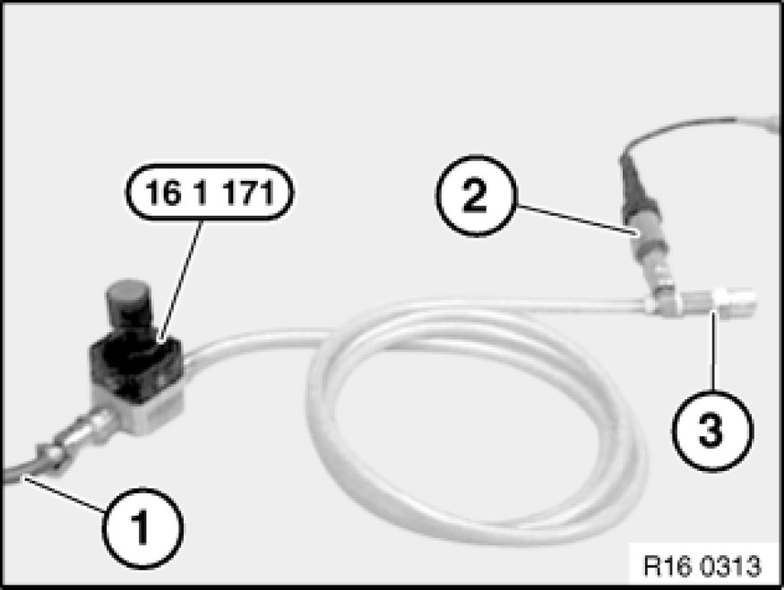

Fuel Filler Cap: Testing and Inspection
16 11 130 - Checking filler cap pressure relief valve

Special tools required:
- 13 3 010 13 3 010 Hose Clip
- 16 1 171 16 1 170 Tester with Test Adapter
- 16 1 172 16 1 170 Tester with Test Adapter

Set pressure regulator on special tool 16 1 171 16 1 170 Tester with Test Adapter fully in "-" direction.
Connect special tool 16 1 171 16 1 170 Tester with Test Adapter via compressed air line (1) to workshop/garage compressed air system (8 ... 10 bar).
Connect pressure sensor (2) from Diagnosis and Information System.
Connect special tool 16 1 172 16 1 170 Tester with Test Adapter to fast-release coupling of special tool 16 1 171 16 1 170 Tester with Test Adapter.
Install fuel tank cap on special tool 16 1 172 16 1 170 Tester with Test Adapter (3).

Note:
Only the absolute pressure is indicated in the display of the Diagnosis and Information System (DIS). The current ambient air pressure is already displayed without additional pressurization.

Check testing equipment for leaks!
Select "Measurement/ Pressure" function on Diagnosis and Information System (DIS).
Increase pressure by 0.2 bar with pressure regulator on special tool 16 1 171 16 1 170 Tester with Test Adapter.
Using special tool 13 3 010 13 3 010 Hose Clip, disconnect supply line from special tool 16 1 171 16 1 170 Tester with Test Adapter.
Read off and note down pressure.
Wait 60 secs.
Read off pressure again and compare with starting pressure value.
Measurement evaluation:
Check filler cap pressure relief!
Select "Measurement/Pressure" function on Diagnosis and Information System (DIS).
Increase pressure by 0.3 bar with pressure regulator on special tool 16 1 171 16 1 170 Tester with Test Adapter.
Using special tool 13 3 010 13 3 010 Hose Clip, disconnect supply line from special tool 16 1 171 16 1 170 Tester with Test Adapter.
Read off and note down pressure.
Wait 60 secs.
Read off pressure value again and compare with starting pressure value.
Measurement evaluation: